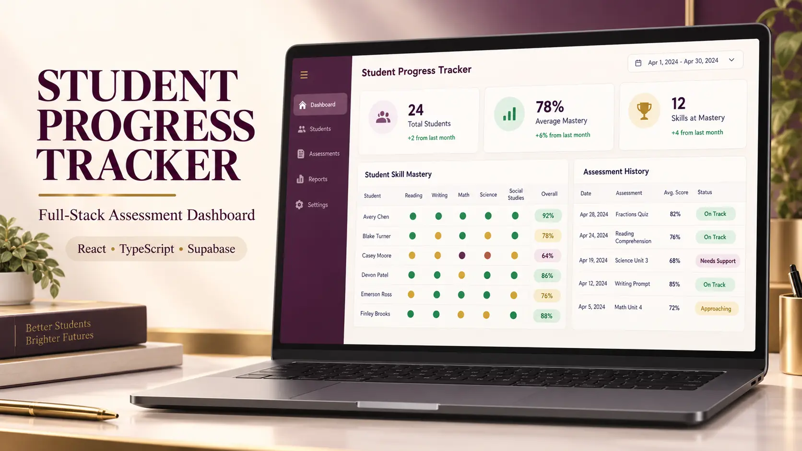
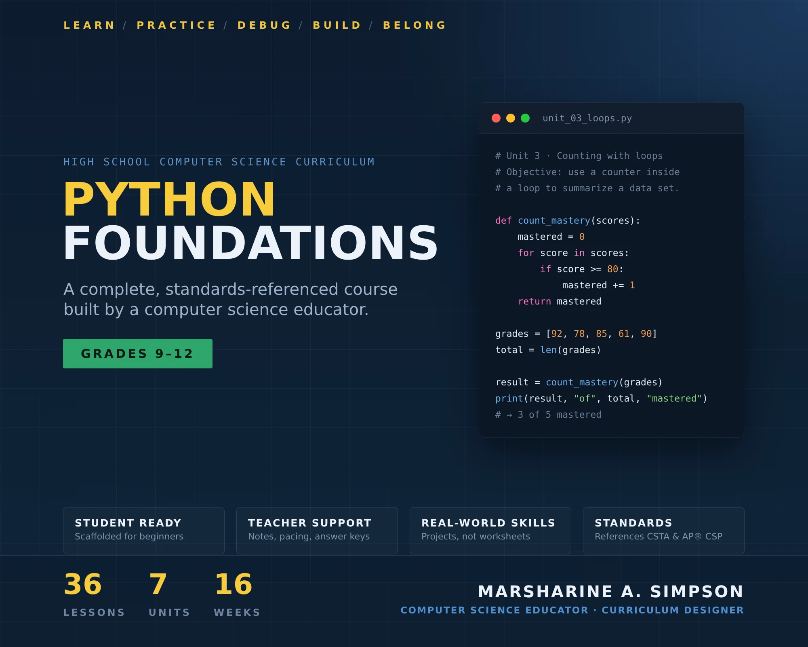
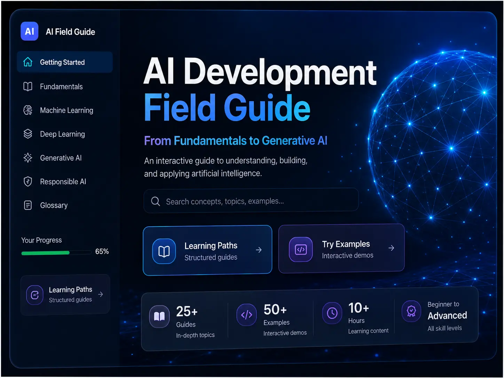
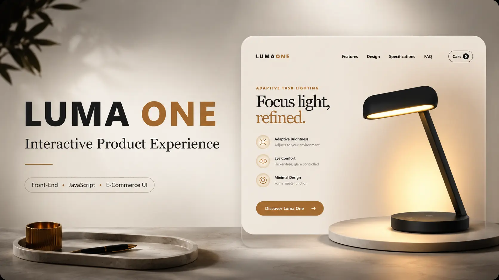

01 · FULL-STACK APPLICATION
Student Progress Tracker
I designed and implemented a secure application for managing students, skills, assessment history, and current mastery through one teacher dashboard.
SELECTED WORK · 2026
Software developer and STEM educator
I develop web applications and teach technical subjects. My work includes a full-stack student assessment tool, a 36-lesson high-school Python curriculum, and targeted mathematics instruction at Edmentum. Explore the projects, implementation details, and teaching samples below.

FEATURED PROJECTS
Open the case studies for architecture, design decisions, sample materials, live demos, and source code.

01 · FULL-STACK APPLICATION
I designed and implemented a secure application for managing students, skills, assessment history, and current mastery through one teacher dashboard.

02 · CURRICULUM DEVELOPMENT
I designed a standards-referenced grades 9–12 course—7 units, 36 lessons—with scaffolded Python instruction, assessments, a complete scope and sequence, and code examples verified on Python 3.12.

03 · INTERACTIVE DOCUMENTATION
I built a searchable and accessible technical reference covering AI fundamentals, generative AI, evaluation, and responsible use.

04 · PRODUCT-FOCUSED FRONTEND
I built an interactive fictional storefront with product customization, quantity controls, cart state, responsive navigation, and accessible feedback.
TEACHING EXPERIENCE
Instructional experience across mathematics, science, and technology, supported by curriculum and assessment design.
Deliver live virtual small-group instruction for secondary students, with a current emphasis on high-school mathematics. Use assessment results and individual learning paths to target skill gaps, model strategies, guide practice, and document learning feedback.
Taught fifth-grade mathematics and science in a classroom setting, planning standards-based instruction and assessing student understanding.
Developed a seven-unit, 36-lesson introductory Python course for grades 9–12, including learning objectives, guided practice, assessments, and teacher support.
View curriculum and teaching samples →New Jersey CTE Computer Science Technology Certificate of Eligibility; Florida K–12 Computer Science Statement of Eligibility. Eligibility is not represented as a standard teaching license.
Computer Science Educator résumé ↗TECHNICAL SKILLS
Technologies and practices demonstrated through deployed applications, documented repositories, testing, and production troubleshooting.
React · TypeScript · JavaScript · HTML5 · CSS3 · Tailwind CSS · DOM manipulation · responsive design
Supabase · PostgreSQL · relational data · authentication · Row Level Security · CRUD operations
Vitest · React Testing Library · TypeScript checking · ESLint · debugging · accessibility · production verification
Git · GitHub Issues · feature branches · pull requests · incremental development · Vercel · technical documentation
PROFESSIONAL EXPERIENCE
At Edmentum, I use assessment and learning-path data to deliver targeted mathematics instruction. In SaaS and IT support roles, I diagnosed user issues and documented solutions. These experiences influence how I design interfaces, explain technical concepts, and test applications.
See the Student Progress Tracker case study for application implementation and testing, or the teaching samples for lesson design and assessments.
Read more about my backgroundRESUMES & WORK SAMPLES